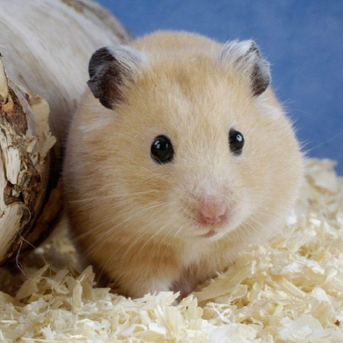
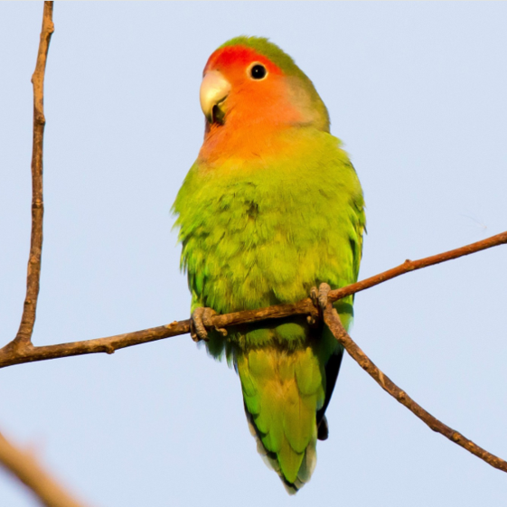

給流浪動物一個溫暖的家，牠們的生命因為你的愛而閃耀。
你知道嗎？每一隻流浪動物都有過孤單無助的日子，然而在你開放的心扉裡， 牠們找到了希望。領養不僅是給牠們新的開始，也是給自己帶來無限的陪伴與愛。
讓我們一起改變流浪動物的命運，讓愛傳遞，讓生命因為你的決定而不再孤單。

 |
 |
 |
 |  |  |
|---|---|---|---|---|---|
| 狗 | 貓 | 兔 | 鼠 | 鳥 | 爬蟲 |